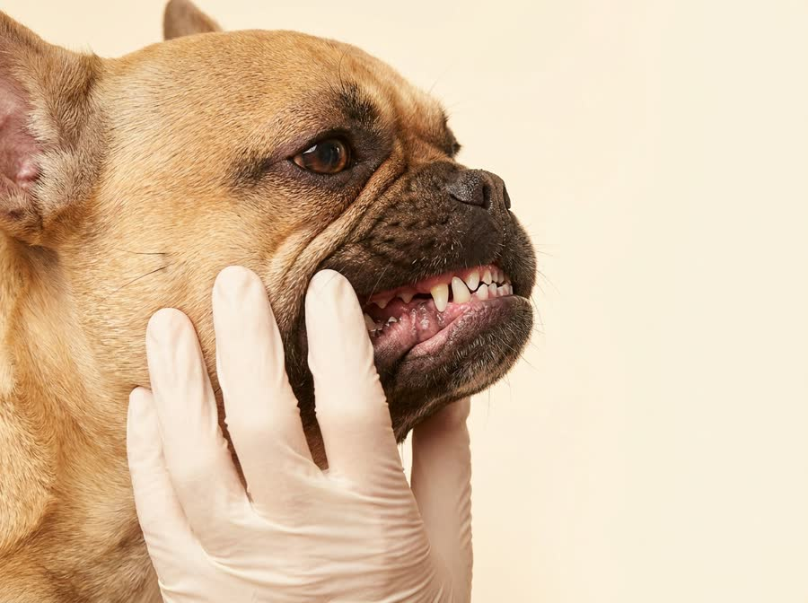
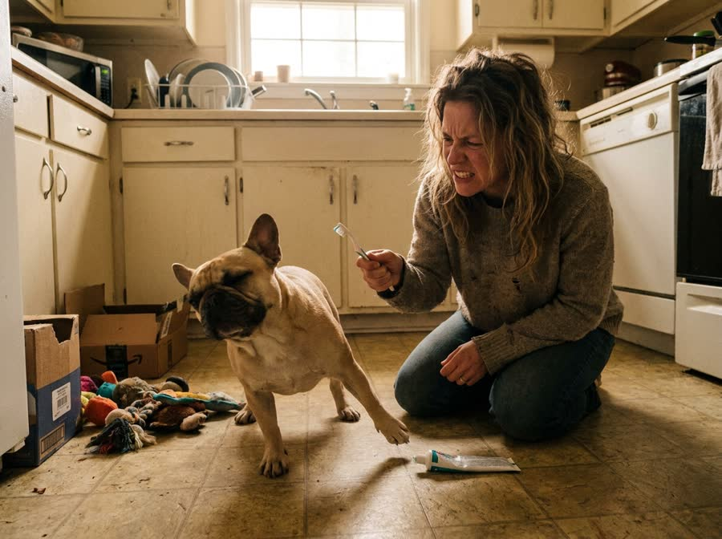
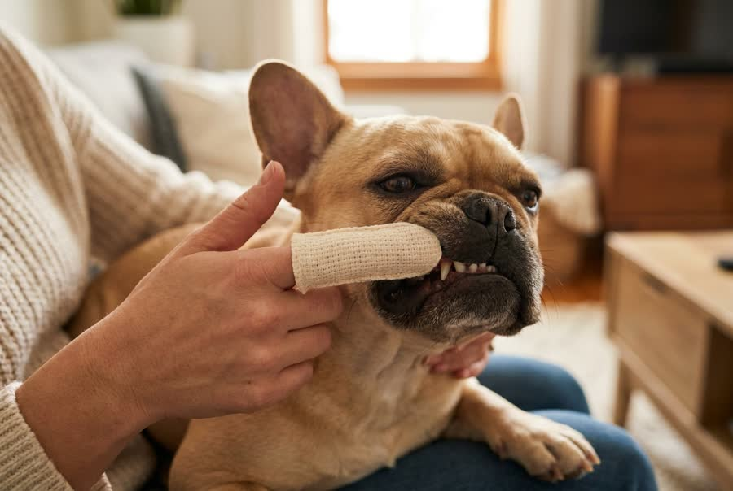
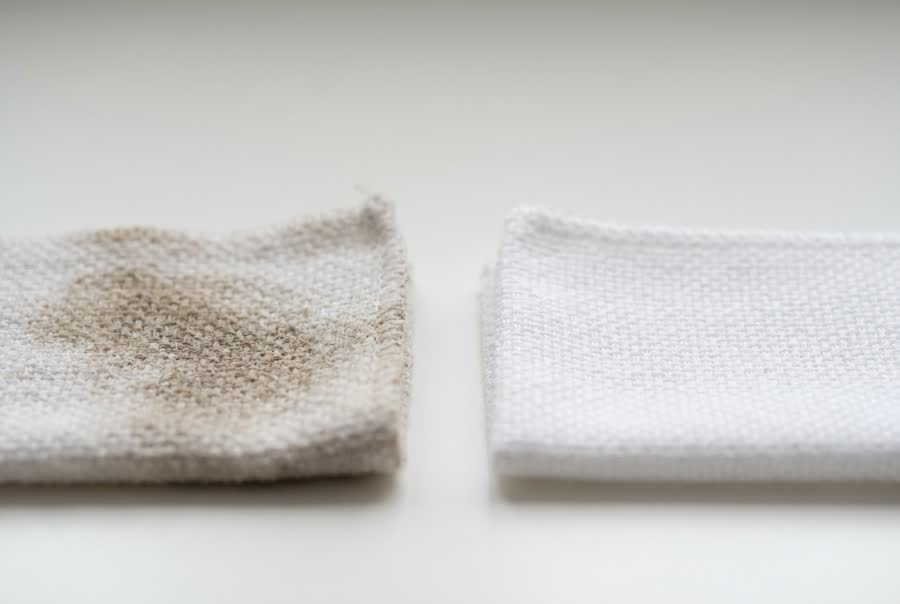
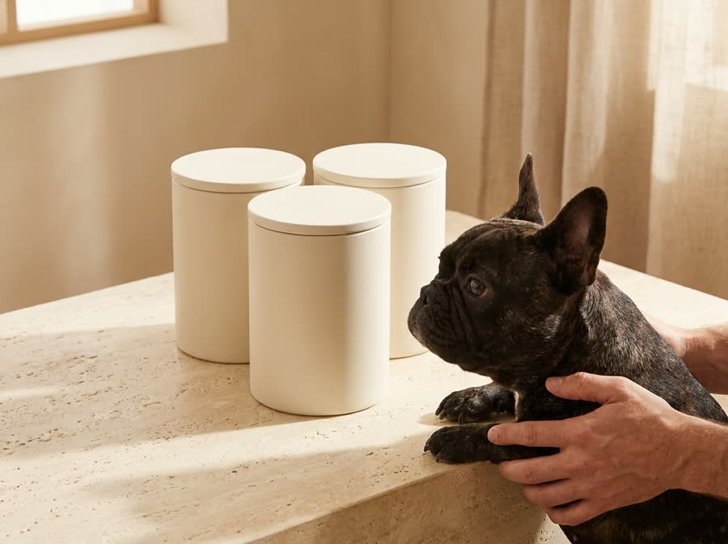
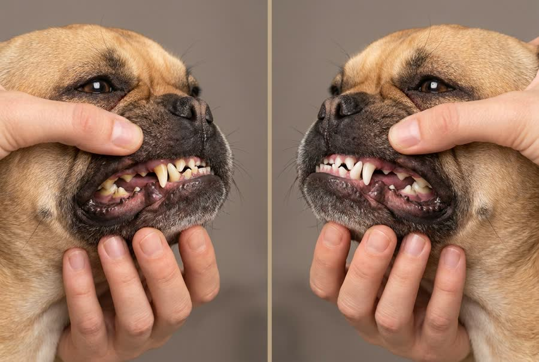
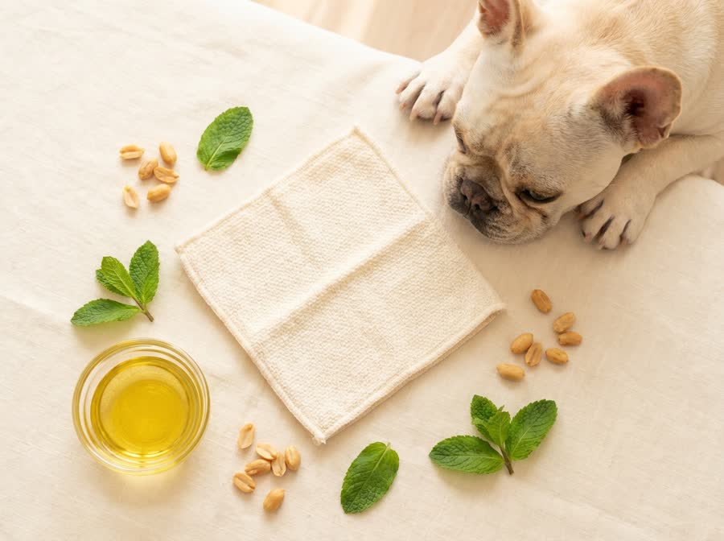

8 Reasons Your Frenchie's Breath Won't Quit. And The 30-Second Fix That Finally Worked.
It was never "just dog breath." It is the shape of his face.
I spent two years and about $150 on dental chews, a water additive, a tiny finger toothbrush, dental kibble and a spray with hundreds of five-star reviews. Otis fought every one of them, and his breath still cleared a room.
Then a vet explained something about flat-faced breeds that changed how I saw the whole problem. Here is what I wish someone had told me two years ago.
Otis, and the routine he actually lets me do.

He has 42 teeth in a jaw built for half that
A Frenchie carries the same number of teeth as a Labrador, packed into a muzzle a fraction of the length. They overlap, twist and crowd. Food and bacteria get trapped in gaps you cannot see, and that is what you are smelling.

A brush cannot reach the part that matters
The plaque that causes the smell sits in the tight overlaps and along the gumline. Bristles slide across the top of it. On a breed this crowded, brushing cleans the easy surfaces and misses the actual problem, which is why his breath came back within a day.

He will not fight a finger the way he fights a brush
Every flat-faced owner knows the routine. He clamps his mouth, twists his head, and it is over in four seconds. But he lets me wrap a finger and swipe, because the scent reads like a treat. No pinning him down, no stress for either of us.

It is not a wet wipe. It actually scrubs.
This was my biggest doubt, so I will be blunt. A flat soft wipe just smears bacteria around. The Roofus wipe is dual-sided: a textured Buffbead side that lifts plaque off the tooth, and a smooth side that polishes. The first one came away a color I did not want to think about.
The routine you will actually do beats the one you won't
Be honest like I finally was. Nobody brushes a dog's teeth for four minutes a day. The routine that protects his teeth is the one that genuinely happens. Thirty seconds, once, while he thinks he is getting a snack. That is the only reason it stuck when everything else sat in a drawer.

Buy 2 Get 2 Free, Up To 56% Off
I was skeptical too. With free shipping and a 60-day breath-back guarantee, there was nothing to lose.
CLAIM THE BOGO OFFER
The breath went first, then the teeth looked different
Breath is the fastest thing to turn around, so it is the first proof you get. Inside the first week the sour smell was gone. By week three his teeth looked visibly cleaner along the gumline, which is exactly where I could see the buildup before.

He licks everything, so this mattered
Plant-based, alcohol-free, xylitol-free and formulated with veterinary input, so it is safe if he swallows it. No rinsing, no waiting, no keeping him from his water bowl afterward. I did not want to win the wrestling match and then worry about what I just put in his mouth.
The quote was $388. The real bill would have been higher.
Here is what made me act. A phone quote for a cleaning is one number, but they cannot know what is really happening until he is already under anesthesia, and with a crowded flat-faced mouth they often find teeth to pull. Owners I spoke to walked out well past a thousand once extractions were added.
Flat-faced and small breeds are also up to five times more likely to be diagnosed with periodontal disease than large dogs, according to a study of more than three million dogs. Our dogs are not unlucky. They are built for it.
The actual reason any of this mattered to me.
Give Your Frenchie The 30-Second Routine
Peanut butter, minty fresh or unscented. Buy 2 Get 2 Free with free shipping. If his breath is not noticeably better in 60 days, you get every cent back and keep the canister.
YES! FRESHER BREATH FOR MY FRENCHIE